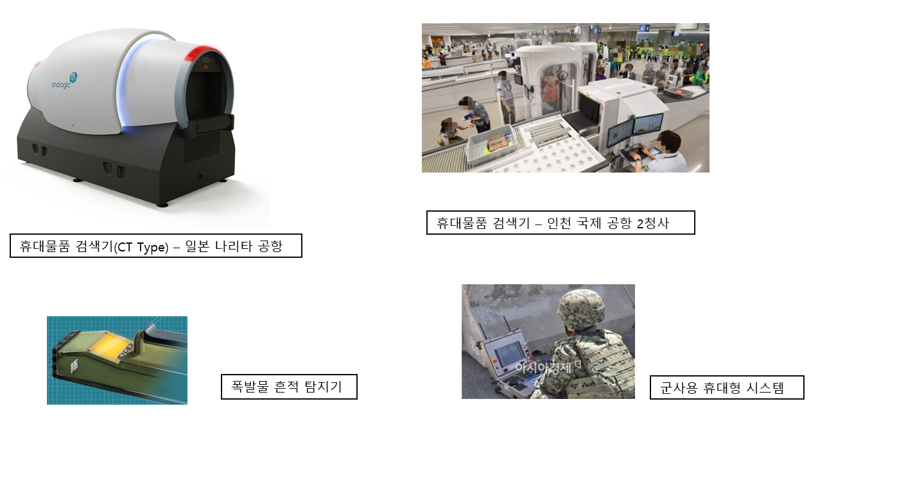

폭발물 탐지 시스템
폭발물 탐지 시스템이란
주로 군사용으로 많이 사용 되지만 미국의 9.11 사태 이후 항공 보안용 대 테러 장비로서도 필수적으로 사용
되어진다. 크게는 휴대물품 내에 포함되어 있는 고체 및 액체 폭발물을 찿아 내기 위한 폭발물 탐지기와 폭발물을 휴대했던 흔적
이나 냄새 등을 추적 탐지하는 폭발물 흔적 탐지기의 두 가지로 나뉘며 폭발물 탐지기는 항공 보안용 휴대물품 검색기(
X-Ray) 와 조합된 고정형 시스템과 군사용, 대 테러용의 휴대형 시스템 등 다양한 형태로 구성 되어 진다 항공 보안
분야에서는 고정형 휴대물품 검색기에서 1차적으로 폭발물이 포함된 의심 화물로 검색된 화물은 별도의 라인으로 이동하여 세부적인
2차 검색을 실시하며 그 흔적 까지 검색 할 수 있다
기술의 세부 분야
폭발물 탐지기 분야는 그 수요가 한정 되어 있고 고도의 보안기술이 요구되며 워낙 고가의 장비 이므로 이 분야의
관련기술(사용법, 취급 방법, 소프트웨어 설정 및 장비 활용 기술 등)을 습득하기는 매우 어렵다 현재 진행중인 도입장비의 외국
장비 제조사와의 잦은 기술적 접촉을 통해 관련 기술을 오랜 기간 동안 체험 하며 습득 해야 한다 특히 사용경험이 풍부한
전문인력과 선행 기술을 가진 외국 유수의 제조업체들과의 지속적인 기술교류가 활성화 되어야 하고 교육을 통한 유지보수 인력의
충분한 기술 축척이 필수 임.
폭발물 탐지 시스템 소개
항공 보안분야에서 많이 사용되어지는 X-Ray검색기(CT Type)와 소프트웨어와 연동되어 구성 물질의
원소기호와 3D Imaging 기술에 의해 휴대물품 내의 폭발물과 그 흔적을 효과적으로 검색하기 위한 첨단솔루션 임
